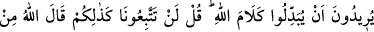

MALLARIMIZ VE AİLELERİMİZ
BİZİ ALIKOYDU
11. Bedevîlerden geri kalmış olanlar, sana diyecekler ki: «Mallarımız ve
ailelerimiz bizi alıkoydu. Allah’tan bizim bağışlanmamızı dile.» Onlar kalplerinde
olmayanı dilleriyle söylerler. De ki: Allah size bir zarar gelmesini dilerse veya bir
fayda elde etmenizi isterse O’na karşı kimin bir şeye gücü yetebilir? Kaldı ki,
Allah yaptıklarınızdan haberdardır.
12. Aslında siz Peygamberin ve müminlerin ailelerine bir daha dönmeyeceklerini
sanmıştınız. Bu sizin gönüllerinize güzel göründü de kötü zanda bulundunuz ve
helâki hak etmiş bir topluluk oldunuz.